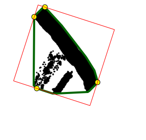

Iaroslav Tymchenko (TTP-4)
Table of Contents
1 Abstract
In this laboratory task the methods of rotating calipers is applied to solve the problem of finding minimal (by square) enclosing rectangle for a given finite set of points on 2D plane.
2 Introduction
In computational geometry and computer graphics applications it's often necessary to find enclosing rectangle of a given set of points (or polygon, or more complex shape) or can be used to improve algorithm's characteristics.
Definition 1: 2D minimal enclosing rectangle problem: for a given set of points S, find enclosing rectangle with minimal possible area.
Definition 2: Finite 2D minimal enclosing rectangle problem: same as previous one, but |S| < infinity. The rest of the paper is focused on this modification of problem.
Definition 3: for a given set of points S, enclosing rectangle is such a rectangle R that contains every points from set S.
Obviously, there is an infinite number of rectangles that satisfy needed condition, and it's always reasonable to pick rectangle that is optimal in some sense.
For example, axis-aligned enclosing rectangle can be found quickly by selecting corner points with coordinates (Xmin, Ymin) and (Xmax, Ymax). It can be used lately in algorithms for detecting collisions. This type of rectangle is optimal on number of computations to find it.
Other property to minimize might be the area of the rectangle. Useful practical application of this methods is to compute estimate volume of a pavilion needed to enclose specific objects marked on the map.
3 Methods
In this report 2 methods for solving the stated problem are presented, both are based on the observations:
Observation 1: S can be replaced with convex_hull(S)
Observation 2: minimal enclosing rectangle must have one side collinear with side of the convex polygon with vertices in convex_hull(S).
For simplicity, in the rest of this report it's assumed that S = convex_hull(S) and |S| = N.
3.1 Method 1: brute-force
Having those 2 observations in mind it's then easy to invent naive algorithm for solving problem:
Algorithm:
- result = undefined
-
For every side of W:
- Try to build rectangle with side collinear to the fixed side of W
- If area of current rectangle is less than area of result, result = current rectangle
It's easy to see that this method requires O(N2) operations, because step 2.(b) requires O(N) operations.
3.2 Method 2: rotating calipers
The rotating calipers method is a general approach that allows to solve many problems of computational geometry easy and elegantly.
In this case, 4 supporting vectors are used to determine rectangle and every rectangle is checked (as in the previous algorithm), but step of finding next enclosing rectangle is recuced to O(1) time.
Algorithm:
-
Initialization:
- supporting vectors (calipers) = ((0, -1), (+1, 0), (0, +1), (-1, 0))
- For each caliper, determine the vertex of W which lies on it
- For each caliper, calculate angle that is should be rotated on to touch the next (clockwise) vertex
- result = rectangle built from calipers
- overall rotation angle = 0
-
While (not every rectangle tried):
- Determine minimal angle so that after rotating every caliper, one or more of them will coincide with edge of W
- Rotate calipers, update corresponding vertices of contact, build new rectangle R from calipers
- If area of R is less than area of result, result = R
- overlall rotation angle += finded angle of rotation
As an optimisation, step 2 might be repeated while overall rotation angle is less than Pi/2.
It's easy to see that complexity of this algorithm is O(N), because step 2.(b) requires only O(1) time and rectangle can be easily restored from calipers in O(1) time.
An example of the code in Java to determine point of 2 vector's intersection (essential part to determine the rectangle from calipers):
1: Point2D intersectionPoint(Line2D line1, Line2D line2) { 2: 3: double det = line1.a * line2.b - line2.a * line1.b; 4: 5: if (Math.abs(det) < epsilon) { 6: // lines are parallel 7: System.exit(-1); 8: } 9: 10: return new Point2D((line1.b * line2.c - line2.b * line1.c) / det, 11: (line1.c * line2.a - line2.c * line1.a) / det); 12: }
The illustrations of two sequential algorithm steps for a sample set of points:
Step X

Step X+1
Points of contact are highlighted with yellow circles, rectangle formed from calipers is shown with red color.
4 Conclusion
The problem of finding minimal enclosing rectangle for a given set of points of 2D plane was discussed. 2 methods were presented to face this problem. Rotating calipers method was used to solve problem with linear time complexity.
Date: 2012-04-22 17:48:17 EEST
HTML generated by org-mode 6.33x in emacs 23